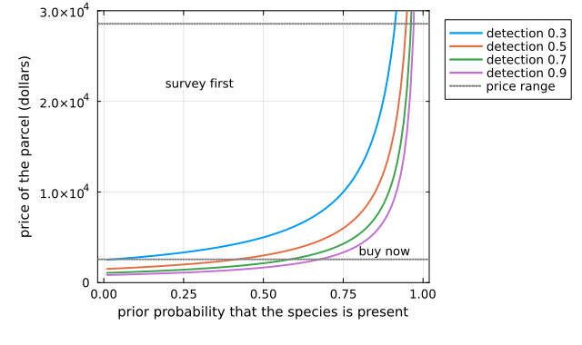
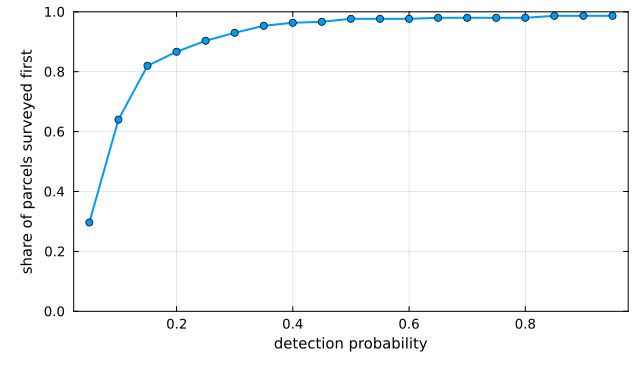
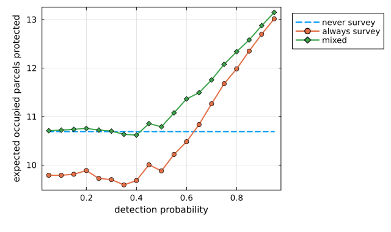

Survey first or act now, under a budget
Simon Frost
- The question
- One parcel
- The rule
- Three hundred synthetic parcels
- Spending the budget
- What the budget means
- More than one species
- What to take from this
The question
A conservation agency can buy parcels of land to protect a species. For each parcel it has a probability that the species is there. It can buy a parcel now, or pay for a survey first and buy only if the survey finds the species. A survey costs money that could have bought land, and it can miss a species that is present. Which parcels should be surveyed, and which should the budget be spent on?
This is the question of Raymond, Schuster, McCune and Bennett (2020), “Combining species distribution models and value of information analysis for spatial allocation of conservation resources”, Journal of Applied Ecology 57:819-830, doi:10.1111/1365-2664.13580. The functions survey_or_act and select_under_budget follow the method of that paper.
This is not a replication. The paper’s 238,247 parcels (probabilities of occurrence and land prices in southern Ontario) are licensed data and are not archived, so its tables cannot be recomputed. The parcels below are synthetic: their probabilities and prices are random numbers and describe no real place. Four numbers are the paper’s own: a survey costs 750 Canadian dollars a parcel, the budget is 100,000 dollars, land prices lie between the smallest and largest per-hectare prices it reports (2,573 and 28,560 dollars), and its worked example has a prior of 0.10 and a detection probability of 0.70.
Actions. For each parcel, buy it (protect) or not (none). Not buying is the baseline, and every value below is a gain over it.
States. The species is present or absent.
Outcome. Parcels protected that hold the species: protecting a parcel is worth 1 where the species is present and 0 where it is not. Money is not part of the outcome. It is the constraint: the question is how many occupied parcels a budget protects.
Information. A survey finds a present species with probability d and never reports an absent one.
using DecisionAnalysis
include(joinpath("..", "_common.jl"))
using Plots
using Random
function parcel(prior)
table = PayoffTable([:none, :protect], [:absent, :present], [0 0; 0 1])
return DecisionProblem(table, [1 - prior, prior]; baseline=:none)
end
survey(d) = Experiment([1 1-d; 0 d]; signals=[:not_found, :found])
nothingOne parcel
The paper’s worked example: the species is present with probability 0.10 and the survey detects it with probability 0.70. The paper gives this parcel no price; the 7,146 dollars used here is the mean price per hectare that it reports.
unit = survey_or_act(parcel(1 // 10), survey(7 // 10); action_costs=[0, 7146],
survey_cost=750)
md_table(["option", "value (occupied parcels protected)", "expected cost (dollars)",
"value per million dollars"],
[["buy now", Float64(unit.act_now.value), Float64(unit.act_now.cost),
1e6 * Float64(unit.act_now.cost_effectiveness)],
["survey first, buy if found", Float64(unit.survey.value),
Float64(unit.survey.cost), 1e6 * Float64(unit.survey.cost_effectiveness)],
["do nothing (baseline)", 0, 0, 0]]; digits=3)| option | value (occupied parcels protected) | expected cost (dollars) | value per million dollars |
|---|---|---|---|
| buy now | 0.1 | 7146 | 13.994 |
| survey first, buy if found | 0.07 | 1250.22 | 55.99 |
| do nothing (baseline) | 0 | 0 | 0 |
Surveying first protects less: the survey misses the species three times in ten, and a parcel where nothing is found is not bought. But it also spends much less, because the parcel is bought only with probability 0.7 × 0.1 = 0.07. Per dollar the survey wins here, so the parcel is surveyed first.
unit.choice, unit.survey.policy(:survey, [:not_found => :none, :found => :protect])The policy, to buy only where the species is found, was not imposed. survey_or_act looks for the policy with the most value per dollar, and this is it. The cost of a surveyed parcel is an expectation. If the survey does find the species the parcel costs its full price and the survey as well:
Float64(unit.survey.cost), unit.survey.largest_cost(1250.22, 7896)The rule
For one species the comparison has a closed form. With prior p, detection d, price C and survey cost M, survey first exactly when
d C (1 − p) > M.The left side is what the survey is expected to save: the price of a parcel that would have been bought, the species being absent, and that the survey lets one avoid. A tie goes to buying now. The identity is proved in the Lean development (survey_first_iff) and holds for every parcel in the test suite. Cheap parcels, and parcels where the species is almost certainly present, are bought without a survey.
priors = 0.01:0.01:0.99
plot(; xlabel="prior probability that the species is present",
ylabel="price of the parcel (dollars)", ylims=(0, 30_000))
for d in (0.3, 0.5, 0.7, 0.9)
plot!(priors, [750 / (d * (1 - p)) for p in priors]; label="detection $d")
end
hline!([2573, 28560]; color=:grey, linestyle=:dot, label="price range")
annotate!(0.3, 22_000, text("survey first", 9))
annotate!(0.88, 3_500, text("buy now", 9))
Above a curve the parcel is surveyed first; below it, bought now. The check that survey_or_act agrees with the closed form on a grid:
agree = all(survey_or_act(parcel(p), survey(d); action_costs=[0, C],
survey_cost=750).survey_first == (d * C * (1 - p) > 750)
for p in (1 // 20):(1 // 20):(19 // 20), d in (1 // 10):(1 // 5):(9 // 10),
C in (2573, 7146, 28560))
agreetrueThree hundred synthetic parcels
The probabilities are skewed towards low values, as the suitability of most of a landscape is; prices are uniform over the paper’s range. Neither is fitted to anything.
rng = Xoshiro(2020)
n = 300
prior = [round(0.05 + 0.9 * rand(rng)^3; digits=2) for _ in 1:n]
price = rand(rng, 2573:28560, n)
budget = 100_000
function strategies(d)
units = [survey_or_act(parcel(p), survey(d); action_costs=[0, C], survey_cost=750)
for (p, C) in zip(prior, price)]
return (; units, mixed=select_under_budget(units, budget),
never=select_under_budget(units, budget; option=:act_now),
always=select_under_budget(units, budget; option=:survey))
end
detections = 0.05:0.05:0.95
results = [strategies(d) for d in detections]
nothingFor each detection probability, how many of the 300 parcels would be surveyed first if each were considered alone:
plot(detections, [count(u -> u.survey_first, r.units) / n for r in results];
xlabel="detection probability", ylabel="share of parcels surveyed first",
legend=false, marker=:circle, ylims=(0, 1))
Even a poor survey is worth having on most parcels, because most parcels are probably empty and a survey costs far less than land. This is the pattern of the paper’s Table B2.
Spending the budget
select_under_budget ranks the parcels by value per dollar and takes them from the top until the budget is spent. Three strategies are compared: each parcel with the option it chose (mixed), every parcel bought without a survey (never survey), and every parcel surveyed first (always survey). All three are gains over buying nothing.
rows = Vector{Any}[]
for (d, r) in zip(detections, results)
d in (0.05, 0.25, 0.35, 0.55, 0.75, 0.95) || continue
push!(rows, [d, r.never.value, r.always.value, r.mixed.value, length(r.mixed.selected),
count(==(:survey), r.mixed.choices)])
end
md_table(["detection", "never survey", "always survey", "mixed", "parcels taken (mixed)",
"of which surveyed"], rows)| detection | never survey | always survey | mixed | parcels taken (mixed) | of which surveyed |
|---|---|---|---|---|---|
| 0.05 | 10.69 | 9.79 | 10.71 | 19 | 1 |
| 0.25 | 10.69 | 9.72 | 10.72 | 23 | 7 |
| 0.35 | 10.69 | 9.59 | 10.63 | 30 | 19 |
| 0.55 | 10.69 | 10.22 | 11.08 | 34 | 28 |
| 0.75 | 10.69 | 11.68 | 12.08 | 38 | 34 |
| 0.95 | 10.69 | 13.01 | 13.15 | 34 | 31 |
plot(detections, [r.never.value for r in results]; label="never survey",
xlabel="detection probability",
ylabel="expected occupied parcels protected", linestyle=:dash)
plot!(detections, [r.always.value for r in results]; label="always survey", marker=:circle)
plot!(detections, [r.mixed.value for r in results]; label="mixed", marker=:diamond)
Three things to read from this.
- Surveying pays only when detection is good. With a poor survey the budget is best spent on the parcels most likely to be occupied, bought outright, and the mixed strategy does just that: at a detection of 0.05 it surveys one of the 19 parcels it takes, although nearly a third of all parcels would be surveyed if considered alone. The paper reports the same pattern for its own parcels.
- Always surveying is worse than never surveying until detection passes about 0.6, because every missed species is a parcel not protected.
- The mixed strategy is not always the best of the three. At some detection probabilities it protects slightly less than never surveying. Ranking by value per dollar is a rule of thumb for a problem (which set of parcels has the most value within the budget) that it does not solve exactly.
worse = [d for (d, r) in zip(detections, results) if r.mixed.value < r.never.value]2-element Vector{Float64}:
0.35
0.4What the budget means
The cost of a surveyed parcel is its expected cost, so the budget holds on average over what the surveys find, not for certain. largest_cost is the bill if every survey found its species:
r = results[findfirst(==(0.75), detections)]
md_table(["strategy at detection 0.75", "parcels", "expected cost (dollars)",
"cost if every survey finds the species (dollars)"],
[["never survey", length(r.never.selected), r.never.cost, r.never.largest_cost],
["always survey", length(r.always.selected), r.always.cost,
r.always.largest_cost],
["mixed", length(r.mixed.selected), r.mixed.cost, r.mixed.largest_cost]];
digits=0)| strategy at detection 0.75 | parcels | expected cost (dollars) | cost if every survey finds the species (dollars) |
|---|---|---|---|
| never survey | 18 | 98730 | 98730 |
| always survey | 38 | 99931 | 252124 |
| mixed | 38 | 99977 | 236444 |
A manager who cannot overspend should not read the expected cost as a commitment. The surveys come first in practice, and the parcels are then bought in order as the money allows.
The paper’s text takes parcels until none fits in what is left of the budget, and select_under_budget does the same by default. The listing printed in its supplement stops after two passes down the ranking; passes=2 follows it. On these parcels the difference is small:
low = results[findfirst(==(0.05), detections)]
two = select_under_budget(low.units, budget; passes=2)
(; passes=low.mixed.passes, parcels=length(low.mixed.selected),
value=round(low.mixed.value; digits=2), parcels_two_passes=length(two.selected),
value_two_passes=round(two.value; digits=2))(passes = 4, parcels = 19, value = 10.71, parcels_two_passes = 18, value_two_passes = 10.69)More than one species
The same function takes any payoff table and any survey. With three species in a parcel, protecting it is worth the number present, and one survey looks for all three. The detection probabilities 0.6, 0.7 and 0.9 are the paper’s; the priors are ours.
species_prior = [1 // 5, 1 // 10, 3 // 10]
detect = [3 // 5, 7 // 10, 9 // 10]
subsets = vec(collect(Iterators.product(0:1, 0:1, 0:1)))
joint = [prod(s[k] == 1 ? species_prior[k] : 1 - species_prior[k] for k in 1:3)
for s in subsets]
table = PayoffTable([:none, :protect], [Symbol("present", join(s)) for s in subsets],
vcat(zeros(Int, 1, 8), permutedims(sum.(subsets))))
three = DecisionProblem(table, joint; baseline=:none)
found = [Symbol("found", join(z)) for z in subsets]
L = [prod(z[k] == 0 ? 1 - s[k] * detect[k] : s[k] * detect[k] for k in 1:3)
for z in subsets, s in subsets]
buy_if_any = [found[i] => (sum(subsets[i]) > 0 ? :protect : :none) for i in 1:8]
u = survey_or_act(three, Experiment(L; signals=found); action_costs=[0, 7146],
survey_cost=750, policy=buy_if_any)
md_table(["quantity", "value"],
[["buy now: expected species protected", Float64(u.act_now.value)],
["survey first, buy if any is found: expected species protected",
Float64(u.survey.value)],
["the same, counting only the species found", Float64(sum(detect .* species_prior))],
["probability that the parcel is bought", Float64(u.survey.probability_of_acting)]];
digits=4)| quantity | value |
|---|---|
| buy now: expected species protected | 0.6 |
| survey first, buy if any is found: expected species protected | 0.5019 |
| the same, counting only the species found | 0.46 |
| probability that the parcel is bought | 0.4026 |
The second and third rows differ. A parcel bought because one species was found may also hold a species that the survey missed, and that species is protected too. The listing in the paper’s supplement values a surveyed parcel by the species found (the third row); survey_or_act returns the expected number present where the parcel is bought (the second), which is what the outcome was defined to be.
What to take from this
survey_or_actcompares buying now with surveying first by what each dollar is expected to protect, against a baseline of doing nothing.- A survey earns its place by the money it saves on parcels that turn out to be empty. It is worth most on expensive parcels of uncertain occupancy.
- Most parcels are worth surveying when looked at alone, and yet a budget is often best spent without surveys unless detection is good.
- The budget is met in expectation only, and the ranking is a rule of thumb. Both are reported, not hidden.